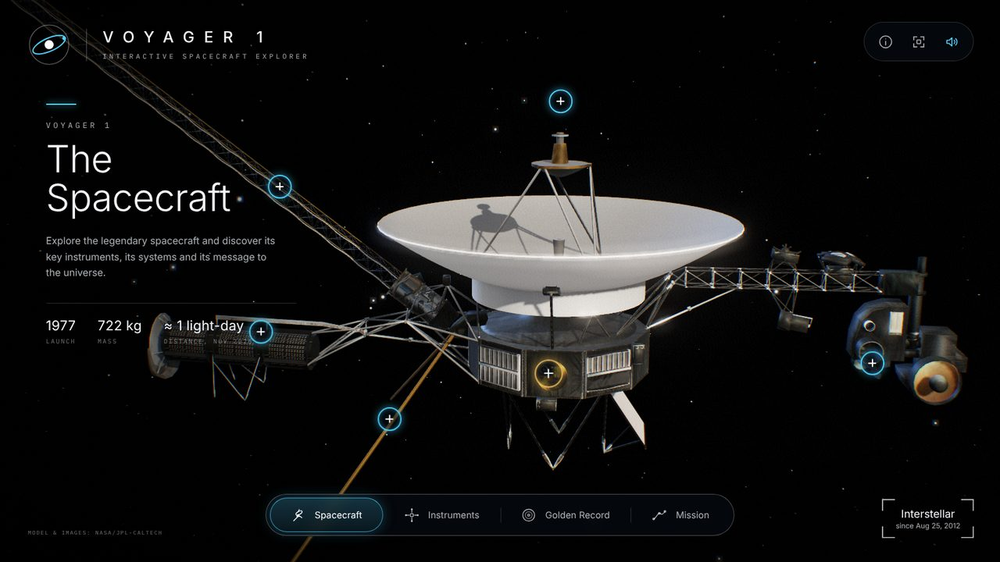
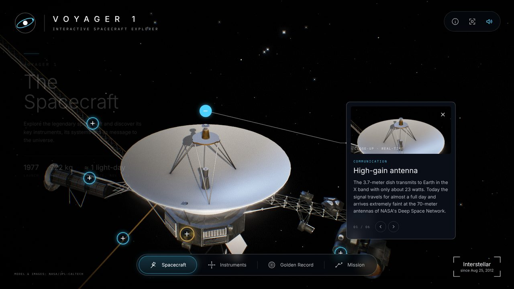
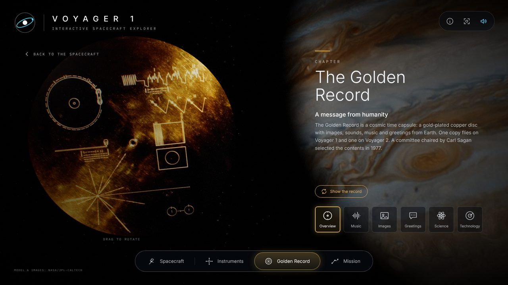
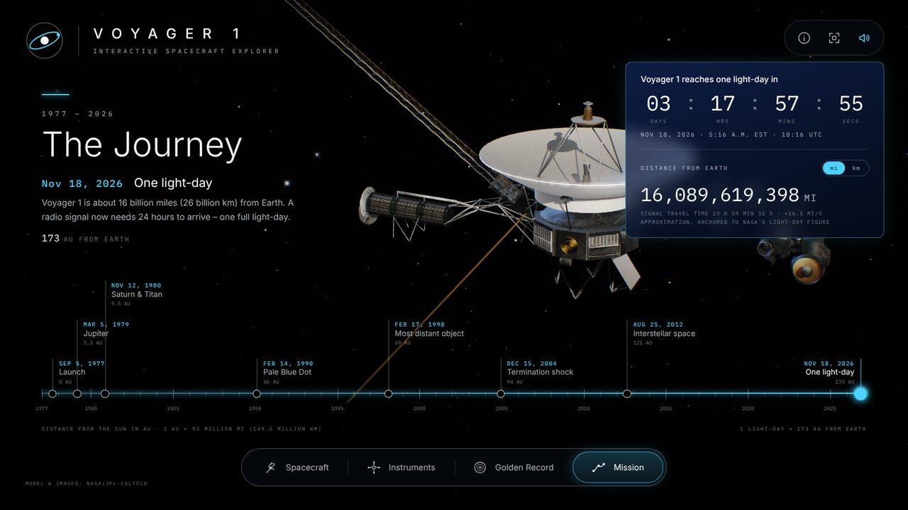

Voyager 1, explorable in your browser
Rotate NASA's most distant spacecraft, open its instruments, flip the Golden Record and follow the journey to one light-day from Earth. A self-initiated study of interactive 3D presentation – the same approach works for your product.
A complex object, explained by letting people explore it
Voyager 1 has been flying since 1977. This presentation turns NASA's 3D model of the spacecraft into an experience you can steer yourself: every part you click tells its own short story.
It is a study for a service: interactive 3D presentations of machines, devices and components, built from existing 3D or CAD data and shown directly in the browser – at trade fairs, in sales conversations or on a website.
Runs in the browser
No app, no plug-in, no download. A modern browser with WebGL is all it takes.
Built from existing 3D data
The spacecraft is NASA's published 3D model, prepared for real-time rendering in about 1.6 MB.
Easy to embed
A 16:9 frame that fits into any website, for example a WordPress page.
Privacy-friendly
No tracking, no cookies, no third-party fonts or CDNs.
Four chapters, one spacecraft

Orbit, zoom and explore
A cinematic real-time scene with bloom, ACES tone mapping and a starfield that drifts past as if you were flying alongside.

Six hotspots with info panels
High-gain antenna, cameras, power source, magnetometer boom, plasma wave antennas – each with a close-up rendered live.

A chapter of its own
Turn the disc, flip between cover and record and read about its music, images, greetings and the instructions engraved on the cover.

The journey to one light-day
Eight milestones from launch to interstellar space, a countdown to November 18, 2026 and a live distance counter in miles or kilometers.
- Rendering
- three.js r169 · WebGL 2
- Look
- Bloom, ACES, film grain
- Sound
- Synthesized with Web Audio
- Size
- About 4 MB, no build step
Want an interactive 3D presentation of your product?
From CAD data to an explorable presentation with hotspots, chapters and your own story – for trade fairs, sales and your website. Created by Uwe Schweer-Lambers, 3D motion designer.
Where everything comes from
3D model & images
- Voyager 3D model – NASA 3D Resources (NASA/JPL-Caltech; converted to glTF and optimized)
- Golden Record cover – “Instructions for Aliens” (NASA/JPL-Caltech)
- Golden Record disc – “Voyager Golden Record – Front” (NASA/JPL-Caltech)
- Orbital sunrise (loading screen) – “Sunrise Begins”, photographed from the International Space Station, Aug 15, 2024 (NASA/Matthew Dominick; cropped to 16:9)
- Jupiter texture – Solar System Scope, licensed under CC BY 4.0 (rendered as a lit globe, cropped and darkened)
Mission facts
- What Is a Light-Day? – NASA Science (countdown time and light-day distance)
- Where Are Voyager 1 and Voyager 2 Now? – NASA Science
- NASA Shuts Off Instrument on Voyager 1 to Keep Spacecraft Operating – NASA Voyager blog, Apr 17, 2026
- The Golden Record Cover – NASA Science
- Voyager mission overview – NASA Science
Software & fonts
- three.js r169 (MIT)
- Inter and IBM Plex Mono (SIL Open Font License 1.1)
This is an independent, non-commercial study. It is not affiliated with or endorsed by NASA or JPL. NASA material is used in accordance with the NASA Images and Media Usage Guidelines; no NASA insignia is used.
Good to know
How exact is the distance counter?
It is an approximation. It is anchored to NASA's figure that Voyager 1 is exactly one light-day (16,094,799,096 miles / 25,902,068,356 km) from Earth on November 18, 2026 at 5:16:07 a.m. EST. From there it adds the spacecraft's speed of about 16.9 km/s and Earth's position on its orbit around the Sun. Values can differ from NASA's live figures by some tens of thousands of kilometers.
What happens after November 18, 2026?
The countdown turns into a counter showing the time since Voyager 1 reached one light-day. The distance and the signal travel time keep growing.
Does this site collect any data?
There are no cookies, no analytics and no forms. All files, including fonts and the 3D library, are served from this site. If you switch between miles and kilometers, that choice is stored only in your own browser. The site is hosted on GitHub Pages; GitHub processes technical data such as IP addresses to deliver it. See the privacy notice linked below.
Which devices are supported?
Current versions of Chrome, Edge, Firefox and Safari with WebGL 2. It also runs on phones and tablets, but the 16:9 presentation is best viewed on a larger screen or in landscape.